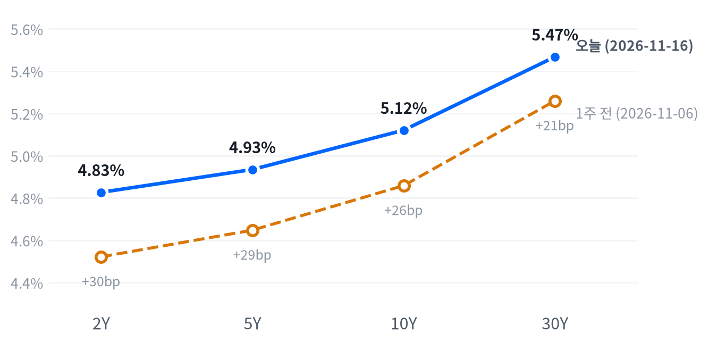

엔비디아 실적을 하루 앞두고 상무부가 AI 칩 원격 접근을 막는 규정을 내놓은 날, 반도체·메모리·광통신·전력설비가 함께 밀려 S&P 500은 1.92% 내렸다. 필수소비재와 유틸리티만 올랐고 세 지수 모두 저점 부근에서 끝났다.
이 하락을 실적·상장을 앞둔 위험 축소로 보지만, 수요·규제 재평가라는 반론을 하루 종가로 배제할 수는 없다. 어느 쪽인지는 11월 17일 장 마감 뒤 엔비디아 실적과 11월 23일까지 기술 업종이 시장을 앞서는지로 확인한다.
엔비디아 실적을 하루 앞둔 11월 16일, AI 하드웨어가 업종을 가리지 않고 팔렸다. 같은 날 상무부 산업안보국은 중국계 기업에 연산을 제공하는 해외 데이터센터에 첨단 칩을 보내거나 인도네시아·말레이시아·싱가포르·태국·브라질로 수출할 때 허가를 받도록 하는 규정을 내놓았고, 마감 기사들은 이 규정과 실적·앤스로픽 상장 대기, 젠슨 황 퇴진 뒤 식은 AI 열기를 원인으로 들었다. 기술 업종은 3.24% 내려 S&P 500보다 1.32%p 더 밀렸고, 메모리·광통신·전력설비 종목도 함께 크게 내렸다.
우리는 이 하락을 수요 전망이 바뀐 결과보다 이분 사건을 앞둔 노출 축소에 가깝다고 본다. 규정은 해당국에서 영업하는 미국 본사 기업을 예외로 두었고, 엔비디아 회사 가이던스는 이미 중국 데이터센터 매출을 0으로 가정했다는 보도가 나왔다. 평균적인 종목은 지수보다 덜 내렸고 필수소비재·유틸리티는 올라, 손실은 소수의 대형 기술주에 몰렸다. 시장 일각에서는 반도체 섹터가 극단적 매도 뒤 어느 정도 디리스킹돼 글로벌 헤지펀드 순익스포저가 연초 이후 고점 대비 67% 줄었다는 의견도 나왔다. 가장 강한 반론은 수요·규제 재평가다. 허가 대상 5개국의 데이터센터 수요가 막히고 의회 감독이 이어지면 실적이 예상을 맞춰도 할인은 남는다. 디인포메이션을 인용해 엔비디아 칩을 사 온 한 클라우드 고객이 AMD나 구글 칩을 검토 중이고, 콜레트 크레스 임시 CEO가 황보다 보수적인 접근을 택할 수 있다는 시각도 나왔다. 기술 업종 상대 성과를 두고 시장이 가격에 넣은 기대는 확보하지 못했고, 엔비디아 한 종목에는 옵션 내재 변동 약 ±10.6%가 보도됐을 뿐이라 이 차이가 이미 가격에 들어 있는지는 모른다.
반도체·AI 하드웨어 업종의 상대수익률은 이날 더 나빠졌지만, 하루 뒤 실적이라는 결론이 갈리는 재료가 있어 지금은 새 아이디어를 내지 않는다. 위험 축소였다면 실적이 불확실성을 덜어 준 뒤 메모리·광통신까지 넓게 되돌아야 하고, 그 반응은 한 주 안에 보인다. 키움증권 김승혁 애널리스트도 이번 주 엔비디아 실적과 앤트로픽 상장의 성과를 AI 하드웨어 반등 지속 여부를 가를 변수로 꼽았다. 표현 수단을 따진다면 기술 업종 ETF와 S&P 500의 상대 비교가 가장 단순하지만, 그 ETF에는 엔비디아와 소프트웨어 비중이 커서 하드웨어 종목 묶음과 기초 차이가 남고 스프레드·차입 비용·보유 종목·위험 한도는 주어지지 않았다. 필수소비재·유틸리티가 오른 것은 방어 스타일의 상대 강세가 이어진다는 관찰까지다.
이 판단은 11월 16일 종가 대비 11월 23일 종가에서 기술 업종 누적 등락률이 S&P 500 누적 등락률보다 3.03%p 이상 높으면 뒷받침되고, 3.03%p 이상 낮으면 약해지며 수요·규제 재평가를 우선 설명으로 본다. 그 사이면 결론을 내지 않고, 방향이 맞아도 같은 기간 10년물 금리가 20bp 이상 내리면 금리 하락에 따른 성장주 반등이 겹친 것으로 보고 원인은 판단하지 않는다. 첫 재료는 11월 17일 장 마감 뒤 엔비디아 실적의 가이던스와 중국 설명이고, 같은 날 아침 소매판매 뒤 2년물이 4.827%에서 10년물보다 더 오르면 커브 판단을 약하게 할 첫 신호다.
출처: Reuters, Pepperstone
| 지수 | 종가 | 등락 | 기준일 |
|---|---|---|---|
| 닛케이225 | 59,662.02 | -2.42% | 11월 16일 |
| 항셍 | 23,753.84 | +0.49% | 11월 16일 |
| 상해종합 | 3,602.57 | -0.87% | 11월 16일 |
| DAX | 26,598.64 | -0.57% | 11월 16일 |
| FTSE100 | 10,881.55 | -0.19% | 11월 16일 |
| 유로스톡스50 | 6,348.35 | -0.60% | 11월 16일 |
| VIX | 22.91 | +3.61p | 11월 16일 |
여섯 지수와 VIX는 모두 11월 16일 값이다. VIX 등락은 포인트다. (2026년 11월 19일 정정: 처음에는 아시아 세 지수와 DAX·유로스톡스50을 직전 세션인 11월 13일 종가로 실었다. 11월 16일 종가로 바로잡고 아래 지역 흐름 문단도 고쳤다.)
아시아와 유럽은 미국과 같은 쪽으로 약했다. 아시아 세 지수는 평균 0.93%, 유럽 세 지수는 평균 0.45% 내렸다. 아시아는 지역 안에서도 갈렸다. 닛케이225가 2.42% 내리는 동안 항셍은 0.49% 올랐다.
밤사이 S&P 선물(ES)은 일요일 18:30(ET) 고점 7,614에서 07:00(ET) 저점 7,520까지 1.25% 범위를 움직였고, 나스닥 선물(NQ)은 같은 18:30(ET) 고점에서 07:30(ET) 저점까지 2.63% 범위로 더 크게 밀렸다. 선물은 거래 재개 직후가 고점이었고 아침까지 미끄러졌지만, 그 저점과 겹치는 단일 재료는 확인하지 못했다. 현물은 S&P -0.63%, 나스닥 -1.19%, 러셀2000 -0.47%의 갭으로 하락 출발했다.
평균적인 종목은 지수보다 덜 내렸다. 동일가중 S&P에서 시총가중 지수를 뺀 수익률 차이가 +0.9%p로, 참여도는 소수가 끌어내림 쪽이었다. S&P 500·나스닥·러셀2000은 모두 저점권에서 끝났다.
저점권 마감의 경계는 S&P 500·나스닥·러셀2000 세 지수의 최근 3년 일별 관측값 2,253개로 다시 잰 기준이다. 종가가 그날 고가와 저가 사이 어디에서 끝났는지를 날마다 재어 모으고, 그 가운데 가장 낮게 끝난 4분의 1에 드는 날을 저점권 마감으로 부른다. (2026년 11월 17일 정정: 처음에는 표본을 「2,253거래일」로 적었다. 거래일 수가 아니라 세 지수의 일별 관측값을 합친 개수다.)
AI 하드웨어 매도가 주식을 끌어내리고, 그 주식 약세 속에서 국채가 앞단 중심으로 사들여진 날이다. 유가 하락은 호르무즈 물동량 회복이라는 별개의 재료를 따라 움직였다. 정규장은 개장 직후가 고점이었고 오후까지 매도 압력이 이어졌다. 장중 저점에서 일부 반등했지만 저점 부근에서 마감했다. (2026년 11월 17일 정정: 처음에는 「하루 중 되돌림 없이 끝났다」고 적었다. 세 지수 모두 장중 저점보다 높은 값에서 마감해 바로잡았다.) 정규장 뒤 지수를 움직일 재료는 확인되지 않았고, 엔비디아 실적은 11월 17일 장 마감 뒤에 나온다.
| 지수 | 종가 | 등락률 |
|---|---|---|
| S&P500 가치주 | 239.63 | -1.04% |
| 다우존스 | 51,608.17 | -1.41% |
| 러셀2000 | 2,742.94 | -1.70% |
| S&P500 | 7,416.59 | -1.92% |
| 나스닥 | 24,509.76 | -2.49% |
| S&P500 성장주 | 129.12 | -2.62% |
| 섹터 | 등락률 |
|---|---|
| 필수소비재 | +0.27% |
| 유틸리티 | +0.18% |
| 부동산 | -0.27% |
| 헬스케어 | -0.51% |
| 금융 | -0.85% |
| 소재 | -1.46% |
| 경기소비재 | -1.53% |
| 커뮤니케이션서비스 | -1.72% |
| 산업재 | -1.85% |
| 에너지 | -1.96% |
| 기술 | -3.24% |
AI 하드웨어 매도에 S&P 500은 1.92% 내린 7,416.59로 끝나 평소 하루 움직임의 두 배쯤 흔들렸다. 나스닥은 2.49% 내린 24,509.76, 다우는 1.41% 내린 51,608.17, 러셀2000은 1.70% 내린 2,742.94다. 11개 업종 가운데 오른 것은 필수소비재(+0.27%)와 유틸리티(+0.18%) 둘뿐이고, VIX는 3.61p 오른 22.91로 최근 2년(504거래일) 가운데 높은 쪽 13% 안에 들어왔다.
하락의 중심은 반도체였다. 필라델피아 반도체지수가 약 5% 내렸다는 보도가 나왔고, 마감 기사들은 상무부의 원격 접근 제한 규정, 다음 날 엔비디아 실적과 이번 주 앤스로픽 상장 대기, 젠슨 황 퇴진 뒤 식은 AI 열기를 함께 원인으로 들었다. 상위 19개 기술주 시가총액이 장중 약 9,600억 달러 줄었다는 집계도 나왔다. 성장주가 2.62% 내리는 동안 가치주는 1.04% 내려 스타일 차이가 1.58%p 벌어졌고, 반도체 밖에서도 소프트웨어·인터넷 대형주가 함께 밀렸다. 규정·실적 대기·AI 열기 냉각 가운데 무엇이 더 밀었는지는 하루 종가로 나눌 수 없다.
장중에는 반등 시도가 한 번 꺾인 뒤 매도가 오후까지 깊어졌다. S&P는 개장가 7,514가 사실상 그날의 고점이었고 14:30(ET) 무렵 7,400까지 시가보다 1.51% 밀린 뒤 저점 부근에서 끝났다. 엔비디아는 개장 직후 163.00달러까지 시가보다 2.51% 올랐다가 13:30(ET) 무렵 155.01달러로 밀려, 장 초반 반등이 꺾인 것이 이날 유일한 전환점이다. 꺾인 시점의 단일 촉매는 확인하지 못했다. 정오(ET) 워시 의장 연설과 시간대가 겹치지만 매도는 개장부터 진행 중이었다.
지수 하락의 절반 넘게를 기술 업종이 만들었다. 추정 기여도로 기술이 -1.09%p, 커뮤니케이션서비스 -0.22%p, 경기소비재 -0.21%p, 산업재 -0.11%p, 금융 -0.09%p, 에너지와 헬스케어가 각각 -0.05%p였고, 필수소비재와 유틸리티는 각각 +0.01%p로 낙폭을 거의 줄이지 못했다. 업종 합으로 설명되지 않는 부분은 -0.12%p다.
추정 기여도는 업종 비중을 직접 받지 않아, 최근 252거래일 지수·업종 수익률로 추정한 비중을 곱한 값이다. 소재와 부동산은 비중을 추정할 수 없어 빠졌다. 등락폭은 최근 60거래일 평균 하루 변동 대비 S&P 2.06배, 나스닥 1.89배, 러셀2000 1.53배다.
하락은 깊었지만 넓지는 않았다. 평균적인 종목이 지수보다 덜 내린 것은 손실이 대형 기술주에 몰렸다는 뜻이고, 이 점은 시장 전체의 위험회피보다 AI 하드웨어 노출을 줄인 매도에 가깝다. 반면 세 지수가 모두 저점권에서 끝나 매도 압력이 마감까지 풀리지 않았다는 점은 이 하락을 하루짜리 소음으로 넘기기 어렵게 한다. 러셀2000이 나스닥보다 덜 내렸지만 1.70% 하락이라 소형주가 피난처가 되지는 못했다.
출처: Reuters, Benzinga
| 만기 | 종가 | 전일比(bp) | 1주 전 | 주간 변화(bp) |
|---|---|---|---|---|
| 2Y | 4.827% | -4.7 | 4.522% | +30.5 |
| 5Y | 4.935% | -4.6 | 4.648% | +28.7 |
| 10Y | 5.121% | -3.2 | 4.859% | +26.2 |
| 30Y | 5.468% | -1.3 | 5.260% | +20.8 |
주식이 밀린 날 국채는 앞단 중심으로 사들여졌다. 2년물은 4.7bp 내린 4.827%, 5년물은 4.6bp 내린 4.935%로 가장 많이 내렸고, 10년물은 3.2bp 내린 5.121%, 30년물은 1.3bp 내린 5.468%에 그쳤다. 장기물 레벨은 여전히 높다. 10년물은 최근 2년(504거래일) 가운데 이보다 높았던 날이 18일뿐이고, 30년물은 16일뿐이다.

커브 차트의 「오늘」은 11월 16일 종가, 「1주 전」은 11월 6일 종가다. 1주 전보다 2년물은 30.5bp, 10년물은 26.2bp, 30년물은 20.8bp 높다.
하루로는 2년물이 10년물보다 1.5bp 더 내린 불 스티프닝이다. 2s10s는 29.4bp, 5s30s는 53.3bp로 벌어졌다. 1주 전과 비교하면 2년물이 30년물보다 9.7bp 더 오른 베어 플래트닝이 여전히 커브의 큰 모양이고, 이날 하루는 그 위에서 앞단이 조금 되돌린 정도다.
금리를 끌어내린 것은 주식 약세에 따른 안전자산 매수였다고 본다. 국채가 주식 약세와 워시 의장의 「AI가 실망할 수 있다」는 시나리오 언급 속에 소폭 매수됐다는 보도가 나왔고, CME FedWatch 기준 12월 25bp 인상 확률은 93.7~95.7%로 보도돼 인상 자체는 거의 가격에 들어가 있다. 그런데도 앞단이 더 내린 것은 12월 인상 뒤 경로나 50bp 가능성의 일부가 위험회피 속에 덜어졌을 여지를 보여 준다. 다만 두 확률 보도치는 관측 시각이 확인되지 않아 11월 13일 값과 같은 기준으로 비교할 수 없고, 정책금리 경로를 직접 재는 자료로 확인하지도 않았다.
명목금리를 실질금리와 기대인플레로 나눈 최신 자료는 11월 13일 것이다. 그날 10년물 5bp 상승은 전부 실질금리에서 나왔고, 5거래일로 넓혀도 31bp 상승이 모두 실질금리였다. 11월 16일 값은 기대인플레만 들어와 10년 기대인플레가 4bp 내린 2.20%, 5년 기대인플레가 5bp 내린 2.25%로, 같은 날 WTI가 3% 넘게 내린 것과 방향이 같다. 실질금리 11월 16일 값이 나오면 이날 10년물 3.2bp 하락이 물가 보상에서 왔는지 실질금리에서 왔는지 확인된다. 기대인플레에는 위험·유동성 프리미엄도 섞여 있다. 하이일드 스프레드는 11월 13일 3.23%로 5거래일 사이 19bp 좁혀졌지만, 이날 주식 급락 이전 값이다.
5년 뒤 5년 명목금리 5.32%, 실질 3.14%(11월 13일 기준). 기대인플레 쪽 수치와의 교차검증은 할 수 없었고, 위험 프리미엄이 섞인 값이다.
출처: CNBC, Reuters
| 통화쌍 | 종가 | 등락률 | 기준일 |
|---|---|---|---|
| DXY | 103.603 | +0.19% | 11월 16일 |
| USD/KRW | 1,336.11 | +0.09% | 11월 16일 |
| USD/JPY | 159.482 | -0.19% | 11월 16일 |
| EUR/USD | 1.0999 | -0.25% | 11월 16일 |
달러는 미국 금리가 내린 날에도 올랐다. 달러지수는 0.19% 오른 103.603으로 평소의 절반 남짓 움직였고, 유로/달러는 0.25% 내린 1.0999다. 달러/엔은 0.19% 내린 159.482엔, 원/달러는 1,336.11원으로 둘 다 거의 움직이지 않았다. 원/달러는 최근 2년(504거래일) 가운데 이보다 낮았던 날이 11일뿐인 레벨에 머물러 있다.
이날 달러를 받친 것은 금리차보다 위험회피라고 본다. 미국 2년물이 4.7bp 내려 금리 쪽은 오히려 달러에 불리했는데, 주식이 급락한 날 달러는 유로보다 강했고 엔보다는 약했다. 위험회피 때 달러와 엔이 함께 사들여지는 모양과 맞는다. 상대국 금리를 함께 재지 않아 금리차가 실제로 얼마나 움직였는지는 확인되지 않았고, 유로 약세에 유럽 고유 재료가 있었는지도 찾지 못했다.
환율은 뉴욕 16:00 ET 가격, 전 거래일 같은 시각 대비다. 결제가와 다를 수 있다. 등락폭은 최근 60거래일 평균 하루 변동 대비 달러지수 0.59배다.
| 품목 | 종가 | 등락률 |
|---|---|---|
| WTI | $85.53 | -3.82% |
| Brent | $92.35 | -3.93% |
| 천연가스 | $3.133 | -3.24% |
| 금 | $3,854.50 | -0.70% |
유가는 공급 정상화 기대에 3% 넘게 내렸다. WTI는 3.82% 내린 85.53달러, 브렌트는 3.93% 내린 92.35달러로 끝났고, 최근 유가가 크게 출렁여 온 탓에 이 낙폭도 평소 하루 움직임의 1.3배 정도다. 천연가스는 3.24% 내린 3.133달러, 금은 0.70% 내린 3,854.50달러다.
호르무즈 해협 물동량이 회복되는 신호와 국제에너지기구의 4분기 공급 과잉 전망이 유가를 눌렀다는 보도가 나왔다. 같은 날 이란 해군은 해협 인근에서 유조선이 기뢰에 닿아 불이 났다고 전했지만 가격을 되돌리지는 못했다. WTI는 새벽 89.49달러 고점 뒤 오후 85.34달러까지 밀려 저점 부근에서 끝났다. 브렌트와 WTI의 가격 차는 6.82달러로 전 거래일 7.20달러보다 좁혀졌고, 표의 WTI는 12월물, 브렌트는 1월물이라 가격 차에는 만기 차이도 들어 있다. 유가 하락은 이날 기대인플레가 내린 것과 방향이 같다.
금은 금리가 내리고 주식이 급락한 날에도 오르지 못했다. 안전자산 수요가 국채와 달러로 향했고 금으로는 번지지 않았다는 관찰까지이고, 금을 판 이유를 가리킬 재료는 확인하지 못했다.
원자재·환율은 뉴욕 16:00 ET 가격, 전 거래일 같은 시각 대비다. 결제가와 다를 수 있다.
출처: MarineLink, Business Recorder, ADVFN, Asharq Al-Awsat
엔비디아(-4.12%), 마이크론(-7.62%), AMD(-5.58%), 인텔(-7.02%), 마벨(-7.27%)은 반도체·AI 하드웨어 관련주의 약세를 키운 종목들이다. 실적 전날 식은 AI 열기와 상무부의 중국 원격 접근 제한 규정이 겹친 매도로 보도됐고, 엔비디아는 지난주 13% 내린 데 이어 10월 고점보다 30% 넘게 낮아졌다는 보도가 나왔다. 마이크론에는 연방 판사가 마이크론·삼성·SK하이닉스의 범용 D램 공급 담합 집단소송 기각 신청을 받아들이지 않았다는 소식이 더해졌다. 시장 일각에서는 세미애널리시스가 기관용 리포트에서 2027년 AI 가속기 시장 전망을 7700억 달러에서 6270억 달러로 낮추고 2028년 HBM 수요도 30% 내렸다는 소식이 X를 통해 퍼졌다는 의견도 나왔다.
알파벳(-4.07%)은 커뮤니케이션서비스 업종의 하락을 이끌었다. 새 AI 칩 허가 규정과 함께 상위 기술주 시가총액이 크게 줄었고 알파벳이 그 가운데 약 1,350억 달러를 잃었다는 집계가 나왔지만, 알파벳 고유의 재료는 확인되지 않았다.
P&G(+1.90%)는 필수소비재 업종의 상대 강세를 받친 종목이지만, 확인된 재료는 없다.
유나이티드헬스(+1.12%)는 지수 낙폭을 줄인 쪽이었고, 확인된 재료는 없다.
샌디스크(-8.58%), 델(-6.96%), 시게이트(-5.54%)는 AI 칩 매도가 메모리·저장장치로 번진 쪽이다. 샌디스크는 에버코어가 목표가 2,500달러를 제시했는데도 내렸고, 며칠 뒤 8대 1 액면분할을 앞두고 있다는 보도가 나왔다. 번스타인은 AI 하드웨어가 무차별 매도에 휩쓸렸다며 델·샌디스크가 부당하게 벌을 받았다고 평가했다는 보도가 나왔다.
이 약세는 업종 전체의 움직임이다. 지난 20거래일 동안 AI 인프라 관련주는 시장 움직임을 감안하고도 17.08% 뒤처졌는데, 성장−가치·대형−소형·반도체 세 축으로 나누면 반도체 축의 몫이 -15.46%p로 대부분이고 대형−소형 +1.09%p, 성장−가치 -0.29%p는 작다. 세 축으로 설명되지 않는 몫은 -2.42%p다.
AI 인프라 관련주(마벨·코히어런트·루멘텀·GE 버노바·버티브) 기준, 시장 민감도 3.29를 감안한 하루치 초과수익의 20일 합이다. 축별 몫은 최근 60거래일로 잰 민감도를 곱한 값이다.
출처: Reuters, AP, GuruFocus, Benzinga, 24/7 Wall St., BigGo Finance
새 경제지표가 없어 미국 경기 국면은 성장 보합·물가 재가속인 비용압박을 5일째 유지한다. 성장 점수 0.065와 물가 점수 0.647은 11월 13일 생산자물가 뒤 그대로이고, 점수가 현재 국면을 가리킨다. 물가 쪽 판단은 소비자물가 전년비 두 지표가 빠진 가용 지표 기준이다. (2026년 11월 19일 덧붙임) 국면이 움직이려면 새 발표가 축 점수를 경계 너머로 밀어야 하며, 첫 자료는 11월 17일 소매판매·산업생산이다.
고용축은 개선이고 새 발표는 없다. 고용축 +0.564
| 지표 | Actual | Forecast | Previous | 발표일 | 컨센 대비 | 직전 대비 | 추세 |
|---|---|---|---|---|---|---|---|
| 구인건수(9월) | 7,523K | — | 7,190K | 2026-09 기준월 | 개선 | 보합 · 3개월 평균 7,435K → 7,349K | |
| 신규 실업수당 청구 | 200,000 | — | 191,000 | 2026-11-12 (11월 7일 주간) | 악화 | 개선(미미) · 4주 평균 199K → 195K | |
| 신규 청구 4주 평균 | 195,250 | — | 195,250 | 2026-11-12 (11월 7일 주간) | 보합 | 개선(미미) · 4주 평균 200K → 196K | |
| 계속 실업수당 청구 | 1,697,000 | — | 1,717,000 | 2026-11-12 (10월 31일 주간) | 개선 | 보합 · 4주 평균 1,707K → 1,708K | |
| 비농업 고용 변화(10월) | +165K | — | +60K | 2026-11-06 | 개선 | 개선(뚜렷) · 3개월 평균 +28K → +137K | |
| 실업률(10월) | 4.1% | — | 4.2% | 2026-11-06 | 개선 | 개선(미미) · 3개월 평균 4.20% → 4.13% | |
| 평균시간당임금 MoM(10월) | +0.37% | — | +0.26% | 2026-11-06 | 개선 | 개선(뚜렷) · 3개월 평균 +0.20% → +0.32% |
생산·활동축은 악화이고 새 발표는 없다. 생산·활동축 -0.618
| 지표 | Actual | Forecast | Previous | 발표일 | 컨센 대비 | 직전 대비 | 추세 |
|---|---|---|---|---|---|---|---|
| 산업생산 MoM(9월) | +0.66% | — | +0.06% | 2026-09 기준월 | 개선 | 보합 · 3개월 평균 +0.40% → +0.32% | |
| 내구재주문 MoM(9월) | +1.91% | — | +0.14% | 2026-09 기준월 | 개선 | 악화(미미) · 3개월 평균 +1.70% → +0.98% | |
| 공장주문 MoM(9월) | +1.84% | — | +0.33% | 2026-09 기준월 | 개선 | 악화(미미) · 3개월 평균 +1.35% → +0.98% | |
| 건설지출 MoM(9월) | -1.85% | — | +1.98% | 2026-09 기준월 | 악화 | 개선(미미) · 3개월 평균 -0.18% → -0.01% | |
| 주택착공(9월) | 1,221K | — | 1,288K | 2026-09 기준월 | 악화 | 악화(완만) · 3개월 평균 1,345K → 1,293K | |
| 신규주택판매(9월) | 676K | — | 680K | 2026-09 기준월 | 악화 | 개선(미미) · 3개월 평균 652K → 668K | |
| 기존주택판매(10월) | 375만 | — | 397만 | 2026-11-12 | 악화 | 악화(뚜렷) · 3개월 평균 4,127K → 3,883K | |
| 무역수지(9월) | -$105.05B | — | -$105.74B | 2026-09 기준월 | 개선 | 악화(뚜렷) · 3개월 평균 -66.6 → -101.2 | |
| 실질GDP QoQ 연율(3분기) | +3.4% | — | +2.2% | 2026년 3분기 | 개선 | — | |
| 필라델피아 연은 제조업지수(10월) | 20.9 | — | 37.8 | 2026-10 기준월 | 악화 | 개선(뚜렷) · 3개월 평균 17.1 → 35.4 |
소비축은 보합이고 새 발표는 없다. 소비축 +0.249
| 지표 | Actual | Forecast | Previous | 발표일 | 컨센 대비 | 직전 대비 | 추세 |
|---|---|---|---|---|---|---|---|
| 소매판매 MoM(9월) | +0.77% | — | +1.29% | 2026-09 기준월 | 악화 | 보합 · 3개월 평균 +0.61% → +0.55% | |
| 미시간대 소비자심리(9월) | 48.1 | — | 51.7 | 2026-09 기준월 | 악화 | 개선(완만) · 3개월 평균 48.0 → 51.7 |
물가축은 재가속이고 새 발표는 없다. 물가 축은 8개 지표 중 6개로 산출했다. 2025년 10월 CPI 비교 기준값이 공식적으로 제공되지 않아 2026년 10월 전년 동월 대비 지표 2개를 계산에서 제외했다. 재가속은 가용 지표 기준의 신호이며, 결측에 따라 물가 판단이 달라질 수 있다. (2026년 11월 19일 덧붙임) 물가축 +0.647
| 지표 | Actual | Forecast | Previous | 발표일 | 컨센 대비 | 직전 대비 | 추세 |
|---|---|---|---|---|---|---|---|
| PPI 최종수요 MoM(10월) | +0.35% | 0.4% | +1.41% | 2026-11-13 | 하회▼ | 하락 | 재가속(뚜렷) · 3개월 평균 +0.17% → +0.72% |
| CPI MoM(10월) | +0.35% | — | +0.65% | 2026-11-10 | 하락 | 재가속(뚜렷) · 3개월 평균 +0.04% → +0.46% | |
| Core CPI MoM(10월) | +0.30% | — | +0.33% | 2026-11-10 | 하락 | 재가속(뚜렷) · 3개월 평균 +0.14% → +0.31% | |
| PCE 물가 YoY(9월) | 3.65% | — | 3.44% | 2026-09 기준월 | 상승 | 교착 · 3개월 평균 3.62% → 3.49% | |
| Core PCE YoY(9월) | 3.12% | — | 3.03% | 2026-09 기준월 | 상승 | 교착 · 3개월 평균 3.10% → 3.05% | |
| 미시간대 1년 기대인플레(9월) | 4.6% | — | 4.0% | 2026-09 기준월 | 상승 | 둔화(완만) · 3개월 평균 4.70% → 4.27% |
직전 대비는 Actual을 Previous와 비교한 것이고, 추세는 최근 3개월 평균을 그 앞 3개월 평균과 비교한 것입니다(주간 실업수당 청구는 4주 평균끼리). 추세의 세기는 그 지표가 평소 움직이는 폭에 견준 크기이고, 작은 변화는 보합으로 봅니다. 분기 지표인 GDP는 두 비교가 같은 숫자를 보므로 직전 대비만 싣습니다.
연준의 다음 수는 12월 9일 FOMC의 25bp 인상이라는 판단을 유지한다. 새 발표가 없어 시점도 그대로다. CME FedWatch 기준 12월 25bp 인상 확률은 93.7~95.7%로 보도됐지만 관측 시각이 확인되지 않아 하나로 정하지 않고, 1월 회의 확률은 확인하지 못했다. 워시 의장의 11월 16일 연설은 금리나 단기 정책 전망을 다루지 않아 이 판단에 새 근거를 더하지 않았다.
12월 9일 FOMC 전까지 연준 성명이나 의장 발언이 추가 인상 여지를 닫으면 12월 인상 중심 판단을 철회한다. 10월 생산자물가가 예상을 밑돈 데 이어 11월 17일 10월 소매판매도 예상을 밑돌고, CME FedWatch 12월 인상 확률이 소비자물가 발표 전 보도치(84%) 아래로 내려가면 12월 인상 중심 판단을 수정한다.
자산별 전달경로 방향은 전일과 같다. 30년물이 이날 내렸지만 5.468%로 채권 방향을 중립으로 되돌리는 기준(5.4% 아래 5거래일)에 들지 않았다.
출처: Reuters, CNBC
워시 의장은 11월 16일 연준 이사회와 샌프란시스코 연은이 연 생산성·일자리 태스크포스 콘퍼런스 개회사에서 금리나 단기 정책 전망은 말하지 않았다. 대신 「초지능」이라 부른 AI가 경제에 줄 영향을 다루며, 연준 직원이 모델로 그려 본 세 갈래 시나리오를 소개했다. 생산성 이득이 노동과 자본에 고루 돌아가는 경우, 일자리 대체로 실업률이 완전고용 수준 위로 오르는 경우, 그리고 AI가 실망해 주가가 떨어지고 경기가 둔화하는 경우다.
Or SI could disappoint. After significant capital investment and stock market gains, expected returns could turn down and equity valuations could fall, leading to an economic slowdown and a more notable rise in unemployment.
또는 초지능이 실망을 안길 수도 있다. 대규모 자본 투자와 주식시장 상승 뒤에 기대수익률이 꺾이고 주식 밸류에이션이 떨어지면서, 경기 둔화와 더 뚜렷한 실업률 상승으로 이어질 수 있다.
출처: 11월 16일 생산성·일자리 태스크포스 콘퍼런스 개회사 · 연준
The Board's staff has begun to evaluate various contingencies, applying stylized, model-based frameworks to generate scenarios. These are illustrative scenarios, not forecasts.
이사회 직원들은 양식화된 모델 기반 틀을 적용해 시나리오를 만들며 여러 비상 상황을 평가하기 시작했다. 이것은 예시적 시나리오이지 전망이 아니다.
출처: 11월 16일 생산성·일자리 태스크포스 콘퍼런스 개회사 · 연준
At the Fed, our role in all this is neither advocacy nor opposition. Our responsibility is to recognize that the widespread adoption of this technology will have significant impact on the economy, with important implications for monetary policy down the road.
연준에서 이 모든 일에 대한 우리의 역할은 옹호도 반대도 아니다. 우리의 책임은 이 기술의 광범위한 채택이 경제에 상당한 영향을 미치고, 앞으로 통화정책에 중요한 함의를 가질 것임을 인식하는 것이다.
출처: 11월 16일 생산성·일자리 태스크포스 콘퍼런스 개회사 · 연준
세 인용을 이으면 이 연설의 무게가 정해진다. 의장은 AI 투자 뒤 기대수익이 꺾이고 주가가 떨어지는 경로를 연준이 검토하는 시나리오의 하나로 올렸지만, 그것이 전망이 아니라고 못 박았고 통화정책 함의는 「앞으로」의 일로 미뤘다. 12월 인상 판단을 바꾸는 말은 없었다. 남는 것은 연준이 AI 실망을 경기 위험의 한 갈래로 공식 논의하기 시작했다는 사실이고, 그 시나리오가 실제로 진행되는지는 연준 발언이 아니라 AI 투자 기업의 실적과 가이던스에서 먼저 드러난다.
연설은 정오(ET)에 시작해 15분가량 이어졌는데, 주식 매도는 그 전부터 진행 중이었다. 나스닥은 13:30(ET) 무렵, S&P는 14:30(ET) 무렵 그날 저점을 찍어 저점은 연설 뒤에 나왔지만, 두 지수는 개장 직후 고점에서 이미 밀리고 있었다. 국채 매수의 원인 가운데 하나로 워시 발언이 거론됐다는 보도는 있지만, 연설 효과와 AI주 자체의 매도를 나눈 보도는 없었다.
이 연설로는 투자 아이디어를 내지 않는다. 발언이 정책 경로를 건드리지 않았고, 시나리오가 현실이 되는지 가를 재료는 11월 17일 엔비디아 실적과 11월 18일 FOMC 의사록이다.
출처: CNBC, Yahoo Finance, mlq.ai
| 지수 | 순위(5거래일 전) | 1개월 | 3개월 | SPY 대비 3개월 | 대비 변화 | 12-1 모멘텀 | 변동성 | 1일 VaR 95% | 베타 | 50/200일선 | 52주 고점 대비 |
|---|---|---|---|---|---|---|---|---|---|---|---|
| 경기소비재 XLY | 5(6) | +5.1% | +1.8% | +5.1%p | +1.3%p | -2.3% | 19.9% | 1.7% | 0.97 | 위/위 | -4.5% |
| 금융 XLF | 7(8) | +4.8% | +0.9% | +4.3%p | +1.5%p | +6.5% | 16.4% | 1.4% | 0.59 | 위/위 | -1.7% |
| 에너지 XLE | 8(5) | -6.7% | +0.6% | +4.0%p | -0.4%p | +55.1% | 24.7% | 2.9% | -0.02 | 아래/위 | -9.0% |
| 소프트웨어 IGV | 10(11) | -5.1% | -2.9% | +0.4%p | +0.7%p | -2.3% | 33.9% | 3.5% | 1.33 | 아래/위 | -12.1% |
| 주택건설 XHB | 12(13) | +6.4% | -4.1% | -0.8%p | +0.5%p | -7.8% | 28.7% | 2.5% | 0.83 | 위/아래 | -15.9% |
| 초대형주 Top 50 XLG | 13(12) | -5.3% | -4.2% | -0.9%p | -0.3%p | +8.2% | 18.4% | 2.0% | 1.16 | 아래/아래 | -8.3% |
| 은행 KBE | 15(14) | +3.7% | -6.0% | -2.7%p | -0.5%p | +13.9% | 16.8% | 1.4% | 0.45 | 위/위 | -7.5% |
| 소형주 IWM | 16(16) | +0.9% | -8.8% | -5.5%p | -1.7%p | +15.4% | 18.2% | 1.7% | 1.00 | 아래/아래 | -10.3% |
| 산업재 XLI | 17(20) | -1.2% | -9.5% | -6.2%p | +0.6%p | +11.6% | 18.3% | 1.6% | 0.87 | 아래/아래 | -10.9% |
| 소형 성장 IWO | 20(19) | +1.2% | -11.5% | -8.2%p | -2.2%p | +9.6% | 22.9% | 2.2% | 1.27 | 아래/아래 | -13.2% |
| 전력망 GRID | 21(22) | -8.1% | -14.9% | -11.5%p | +0.4%p | +12.1% | 30.0% | 3.5% | 1.42 | 아래/아래 | -21.4% |
| 모멘텀 팩터 MTUM | 22(21) | -10.3% | -15.5% | -12.2%p | -1.2%p | +20.1% | 32.8% | 3.4% | 1.73 | 아래/아래 | -23.7% |
| 방산 ITA | 23(23) | +0.1% | -16.9% | -13.6%p | -1.1%p | +2.2% | 22.1% | 2.1% | 0.79 | 아래/아래 | -17.3% |
| 반도체·AI 하드웨어 SMH | 24(24) | -14.4% | -18.9% | -15.6%p | -2.7%p | +57.0% | 47.7% | 5.2% | 2.44 | 아래/아래 | -30.9% |
| 금속·광업 XME | 25(25) | -10.9% | -20.8% | -17.5%p | -3.3%p | +9.6% | 35.1% | 3.8% | 1.56 | 아래/아래 | -32.2% |
| 지수 | 순위(5거래일 전) | 1개월 | 3개월 | SPY 대비 3개월 | 대비 변화 | 12-1 모멘텀 | 변동성 | 1일 VaR 95% | 베타 | 50/200일선 | 52주 고점 대비 |
|---|---|---|---|---|---|---|---|---|---|---|---|
| 헬스케어 XLV | 1(1) | +6.3% | +11.1% | +14.5%p | -0.1%p | +17.6% | 17.3% | 1.4% | 0.41 | 위/위 | -0.9% |
| 필수소비재 XLP | 2(2) | +5.7% | +8.9% | +12.3%p | +2.2%p | +16.4% | 17.8% | 1.4% | -0.03 | 위/위 | 0.0% |
| 배당 SCHD | 3(3) | +4.4% | +4.7% | +8.1%p | +1.1%p | +30.6% | 12.7% | 1.0% | 0.28 | 위/위 | -1.0% |
| 저변동성 SPLV | 4(4) | +5.4% | +3.7% | +7.0%p | +1.5%p | +5.3% | 12.2% | 1.0% | 0.17 | 위/위 | -0.2% |
| 유틸리티 XLU | 6(7) | +4.5% | +1.0% | +4.3%p | +1.1%p | -2.1% | 15.1% | 1.4% | 0.16 | 위/위 | -5.6% |
| 퀄리티 팩터 QUAL | 9(9) | -1.9% | -1.3% | +2.0%p | +0.2%p | +16.5% | 13.1% | 0.8% | 0.79 | 아래/위 | -3.1% |
| 지수 | 순위(5거래일 전) | 1개월 | 3개월 | SPY 대비 3개월 | 대비 변화 | 12-1 모멘텀 | 변동성 | 1일 VaR 95% | 베타 | 50/200일선 | 52주 고점 대비 |
|---|---|---|---|---|---|---|---|---|---|---|---|
| 유럽 VGK | 11(10) | +0.9% | -3.6% | -0.2%p | -0.1%p | +10.1% | 15.2% | 1.3% | 0.67 | 위/위 | -5.3% |
| 일본 EWJ | 14(15) | -5.3% | -5.8% | -2.4%p | +0.5%p | +19.2% | 21.4% | 1.8% | 1.24 | 아래/아래 | -9.5% |
| 신흥국 EEM | 18(17) | -6.3% | -9.9% | -6.5%p | -1.9%p | +16.7% | 25.5% | 2.7% | 1.40 | 아래/아래 | -17.3% |
| 중국 MCHI | 19(18) | -4.2% | -10.7% | -7.3%p | -2.0%p | -19.1% | 17.5% | 1.8% | 0.29 | 아래/아래 | -23.2% |
| 지수 | 순위(5거래일 전) | 1개월 | 3개월 | SPY 대비 3개월 | 대비 변화 | 12-1 모멘텀 | 변동성 | 1일 VaR 95% | 베타 | 50/200일선 | 52주 고점 대비 |
|---|---|---|---|---|---|---|---|---|---|---|---|
| S&P 500 SPY | – | -3.0% | -3.3% | 0.0%p | – | +14.8% | 15.4% | 1.2% | 1.00 | 아래/위 | -5.0% |
| S&P 500 동일가중 RSP | – | +2.3% | 0.0% | +3.3%p | – | +15.7% | 12.9% | 1.0% | 0.64 | 위/위 | -2.0% |
| 나스닥 100 QQQ | – | -6.8% | -7.7% | -4.3%p | – | +17.2% | 24.8% | 2.7% | 1.51 | 아래/아래 | -12.9% |
가격 기준 시장 국면은 10월 30일부터 횡보로 12거래일째이고, 직전 국면은 강세였다. 이날 원판정은 단기 약세로 처음 바뀌었다. SPY가 739.95로 50일선(763.52) 아래에 있고 52주 고점 대비 -5.02%로 단기 약세 문턱(-5%)을 넘었기 때문이다. 이 판정이 3거래일 이어지면 국면이 단기 약세로 바뀐다. SPY는 200일 이동평균선(729.58) 위에 있다.
11월 9일과 비교하면 반도체·AI 하드웨어와 금속·광업의 상대수익률이 가장 크게 나빠졌다. 반도체·AI 하드웨어의 SPY 대비 3개월 상대수익률은 -15.59%p로 한 주 사이 2.74%p 악화됐고 순위는 24위 그대로이며, 금속·광업은 -17.48%p로 3.27%p 악화돼 25위다. 반대쪽에서는 필수소비재가 +12.26%p로 2.16%p 개선돼 2위를 지켰다. 반도체의 악화는 이날 AI 하드웨어 매도가 한 주 누적으로 쌓인 것이고, 필수소비재의 개선은 방어 업종으로 옮겨 가는 흐름이 이어진다는 뜻이다.
위험 신호는 위험선호 축소 쪽으로 기울었다. VIX는 22.91로 최근 2년 가운데 높은 편이고, 연준 대차대조표로 잰 유동성 방향은 11월 11일 기준 긴축이며, 10년 실질금리는 11월 13일 2.91%로 5거래일 사이 31bp 올랐다. 반면 하이일드 스프레드는 11월 13일 3.23%로 5거래일 사이 19bp 좁혀졌고 NFCI는 11월 6일 기준 평균보다 느슨해, 신용 지표는 아직 흔들리지 않았다. 두 신용 값은 이날 주식 급락 이전 것이다.
AI 하드웨어 일제 하락을 실적·상장을 앞둔 위험 축소로 보는 판단(11월 16일)을 새로 세운다. 출발점은 11월 16일 종가 기준 기술 업종 ETF(XLK) 164.76, S&P 500 7,416.59다. 11월 16일 종가 대비 11월 23일 종가에서 기술 업종 누적 등락률이 S&P 500 누적 등락률보다 3.03%p 이상 높으면 뒷받침되고, 3.03%p 이상 낮으면 약해지며 수요·규제 재평가를 우선 설명으로 본다. 그 사이면 결론을 내지 않는다. 방향이 맞아도 같은 기간 10년물 금리가 20bp 이상 내리면 원인은 판단하지 않는다. 엔비디아 실적, 앤스로픽 상장, 규정의 후속 조치는 이 판단이 다루는 재료라 결론을 막지 않는다. 3.03%p는 최근 20개 5거래일 구간에서 잰 같은 차이의 절댓값 평균이고, 그 20개 가운데 기술 업종이 앞선 구간은 7개였다. 일간 종가 비교라 두 지수의 변동성 차이는 보정하지 않았다.
엔비디아 하락을 실적 발표 전까지 이어질 지배구조 할인으로 보는 판단(11월 9일)은 결론일인 이날 방향은 뒷받침됐지만 원인은 판단하지 못한 채 닫는다. 11월 9일 종가 대비 엔비디아는 12.610% 내리고 S&P 500은 1.766% 내려 차이 -10.844%p로 지지 기준(-3.89%p 이하)을 넘었다(전 거래일 -9.010%p). 그러나 AI 노출은 유지한 채 엔비디아 고유 위험만 덜어 낸다는 판단의 한 축은 AMD·브로드컴·메모리·광통신이 엔비디아보다 더 크게 내린 것과 맞지 않았다. 할인이 업종 전반으로 번져 일간 종가로는 지배구조 할인과 업종 전반의 위험 축소·규제 재평가를 나눌 수 없다. 이날 나온 상무부 규정은 이 판단이 다루는 규제 재료라 결론을 막는 사유가 아니다.
소프트뱅크 손상 뒤 전력설비주의 할인을 고객 조달 위험의 재평가로 보는 판단(11월 10일)은 판단 방향으로 돌아섰다. 11월 10일 종가 대비 버티브 -2.858%, GE 버노바 -4.199%로 단순평균 -3.528%이고, S&P 500 -1.387%를 빼면 -2.141%p로 판단 구간(±9.28%p) 안이다(전 거래일 +1.861%p). 이날 두 종목의 하락은 AI 하드웨어 전반 매도와 함께 나왔고 고유 재료는 확인되지 않았다. 2년물 누적 변화는 +10.0bp로 결론을 막는 +25bp에 미치지 않는다. 결론은 11월 17일 종가에서 낸다.
코어위브 실적 뒤 메모리 급반등을 AI 고객의 자금 조달 위험 재평가로 보는 판단(11월 11일)은 약화 기준에 바짝 다가섰다. 11월 11일 종가 대비 마이크론·웨스턴디지털·시게이트 단순평균은 -10.422%, S&P 500은 -2.662%로 차이 -7.760%p이고, 판단 구간(±8.86%p) 안이지만 약화 기준까지 1.10%p 남았다(전 거래일 -3.892%p). D램 담합 소송 진행 판결은 실적·가이던스 변경이 아니어서 결론을 막지 않는다. 2년물 누적 변화는 +10.0bp로 ±25bp 안이다. 결론은 11월 17일 종가에서 낸다.
미국의 이란 합의 불필요 발언 뒤 에너지주 반등을 빠른 종전 가정의 되돌림으로 보는 판단(11월 12일)은 수치로는 판단 방향이지만 유가 쪽 근거가 약해지고 있다. 11월 12일 종가 대비 XLE는 0.995%, S&P 500은 2.316% 내려 차이 +1.321%p로 판단 구간(±3.18%p) 안이다(전 거래일 +1.384%p). 같은 기간 WTI는 3.834% 내려, 에너지의 상대 강세는 유가가 아니라 시장이 더 크게 내린 데서 나왔다. 호르무즈 물동량 회복 보도는 빠른 정상화 쪽 재료다. 결론과 WTI 부호 조건은 11월 19일 종가에서 평가한다.
생산자물가 뒤 커브가 가팔라진 것을 장기물이 커브를 끄는 신호로 보는 판단(11월 13일)은 방향은 맞았지만 경로가 달랐다. 전날 남긴 첫 신호는 2년물이 4.874%에서 10년물보다 더 오르는지였는데, 2년물은 오히려 4.827%로 4.7bp 내려 약화 신호는 나오지 않았다. 2s10s는 27.9bp에서 29.4bp로 +1.5bp 바뀌어 판단 구간(±5.07bp) 안이다. 그러나 10년물도 3.2bp 내린 불 스티프닝이라, 이 상태로 11월 20일 종가를 맞으면 원인은 판단하지 않는다는 조건에 걸린다. 결론은 11월 20일 종가에서 낸다.
어떤 판단도 실행한 포지션이 없어 성과는 잴 수 없다. 다음 세션(11월 17일)에는 아침 소매판매 뒤 2년물이 4.827%에서 10년물보다 더 오르는지가 커브 판단을 약하게 할 첫 신호이고, 같은 날 종가로 전력설비·메모리 판단의 결론이 나온다. 장 마감 뒤 엔비디아 실적은 새 판단의 첫 재료이고, 결론은 11월 23일 종가에서 낸다.
시세는 Yahoo Finance(국채 금리는 네이버 국채 종가), 경제 지표는 FRED와 각 발표 기관(BLS·BEA·Census 등), 그 밖의 내용은 본문에 밝힌 출처에서 가져왔다. 이 보고서는 투자 자문이 아니며 특정 자산의 매수·매도를 권유하지 않는다. 투자 판단과 그 결과에 대한 책임은 전적으로 투자자 본인에게 있다.